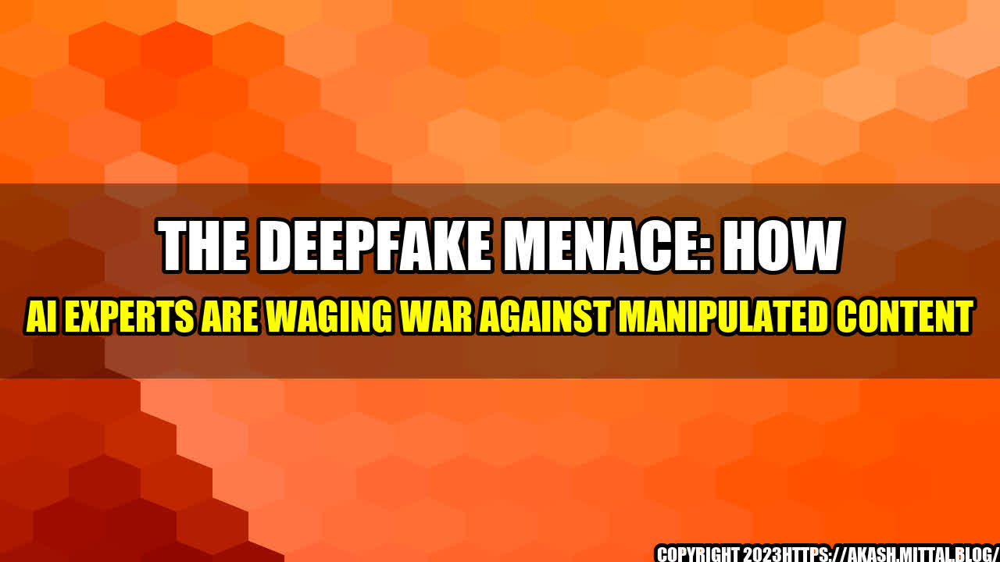

The Deepfake Menace: How AI Experts are Waging War Against Manipulated Content

It's a cold winter night and Jane, a 23-year-old marketing executive, is scrolling through her social media feed when she sees a video of her boss, Alex, making racist comments. The video has gone viral, and within hours, Alex is fired from his job, his reputation destroyed. But there's one problem: the video was a deepfake.
Deepfakes are computer-generated videos that use artificial intelligence to manipulate images and sounds, creating convincing but false footage. They're becoming increasingly prevalent, and experts warn they could have far-reaching consequences. From politics to entertainment, deepfakes have the potential to undermine trust, sow discord, and even spark violence.
So what is being done to combat this new threat? I spoke with AI experts and researchers to find out.
The Dangers of Deepfakes
Deepfakes are not just a harmless prank or a fun tool for creating memes. They pose serious threats to individuals, organizations, and society as a whole. Here are just a few examples:
- Political manipulation: Deepfakes could be used to create false videos of politicians, spreading disinformation and manipulating elections.
- Criminal activity: Deepfakes could be used for blackmail, revenge porn, or to frame someone for a crime they didn't commit.
- Business sabotage: Deepfakes could be used to create false footage of company executives, damaging their reputations and causing financial harm.
- Social instability: Deepfakes could be used to create false videos of protests or riots, inciting violence or causing chaos.
These are just a few of the potential dangers of deepfakes. As the technology becomes more advanced and widespread, the risks will only increase.
Detecting Deepfakes
So how can we detect deepfakes, and prevent them from causing harm? AI experts are working on a variety of tools and techniques to combat the threat. Here are a few examples:
- Forensic analysis: Experts can use forensic techniques to identify evidence of manipulation in videos, such as inconsistencies in lighting, shadows, and reflections.
- Authentication: Experts are developing authentication protocols that can verify the authenticity of videos, such as blockchain-based timestamping.
- Behavioural analysis: Experts can analyse the behaviour of people and objects in videos, looking for signs of manipulation or inconsistency.
- Machine learning: Experts are using machine learning algorithms to detect patterns in deepfakes that distinguish them from genuine videos.
These are just a few of the techniques being developed to detect deepfakes. While none of them are foolproof, they represent important steps forward in the fight against manipulated content.
Conclusion
So what can we do to protect ourselves from the threat of deepfakes? Here are three key takeaways:
- Be sceptical: Don't believe everything you see on the internet. If something seems too good (or too bad) to be true, it probably is.
- Stay informed: Keep up-to-date on the latest developments in deepfake technology, and educate yourself on how to spot and report false videos.
- Support research: Encourage research and development into tools and techniques for detecting deepfakes, and advocate for responsible use of AI.
The fight against deepfakes is just beginning, but with the right tools, techniques, and attitudes, we can prevent false content from causing harm.
References and Keywords:
Hashtags: #Deepfakes #AI #ManipulatedContent #FakeVideos #Cybersecurity
Category: Technology and Society
- https://www.wired.com/story/the-ai-tech-behind-deepfakes-is-exponentially-improving/
- https://www.technologyreview.com/2020/01/10/130843/how-to-detect-deepfakes/
- https://www.business-standard.com/article/current-affairs/deepfakes-and-ai-a-potential-danger-to-politics-and-society-120072300439_1.html
Curated by Team Akash.Mittal.Blog
Share on Twitter Share on LinkedIn